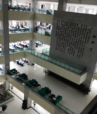
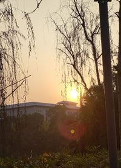
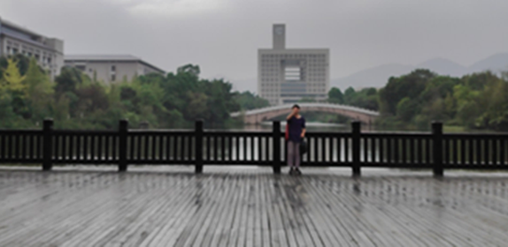
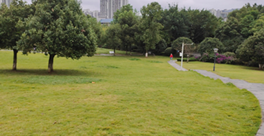
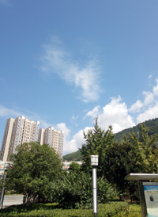
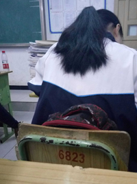
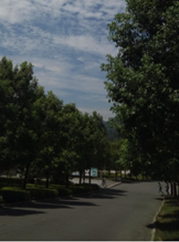

重庆师范大学
创办于1954年。是一所 以文理为主，多学科协调发展的多科性高等学府，坐落在历史文化名城重庆，校园面积2804亩，包括大学城校区、沙坪坝校区和北碚校区。办学理念 ：立教无类，育师有道，精神：自强不息 躬行师道，立教无类 以文化人，校训：厚德 笃学 砺志 创新，校风：学高为师 身正为范，教风：博学敬业 为人师表， 学风：勤学善思 求是致用。截至2018年6月，学校现有全日制本科生25500余人，研究生3600余人。专任教师1600余人，正高职称教师280余人，具有硕士、博士 学位教师占专任教师近80%。博士生导师36人截止到2013年11月12日，重庆师范大学有17个硕士学位一级学科授权、8个专业硕士学位授权、1个中职硕士学位授权 、1个高师硕士学位授权，涵盖哲学、经济学、教育学、文学、理学等11个学科门类。
